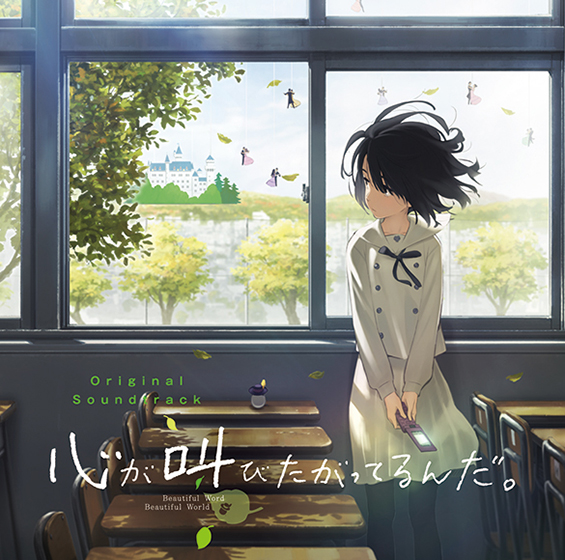

- HTML
- CSS
- JavaScript
가족 신문
우리 가족은 최근에 일본 오사카에 다녀왔다. 모두들 힘들어 하기도 했지만 즐겁고 별 탈 없이 즐길 수 있었다. 앞으로도 자주 이런 기회가 있었으면 좋겠다.
2015-12-28(월)
아침7시쯤에 일어나 김해국제공항까지 이동하게 되었는데 가까울줄 알았는데 의외로 오래걸렸다. 김해선은 경전철이라고 하여 자동운전에다가 2량으로 예전에 일본에서 탔었던 유리카모메랑 비슷했다.
김해국제공항은 공항이라기보단 큰 기차역 정도의 작은 규모였다. 인천국제공항과 같은 큰 공항만 봐서인지 정말로 작다는 생각이 들었다. 덕분에 진에어를 찾는 것도 간단했다. 짐없는 사람 전용 없냐고 물으니 그런거 없다고 해서 짐있는 사람들 뒤에서서 기다려야 했다. (저가 항공이라 그런건가) 서있는 동안 나는 바로 앞에 있는 여행자보험 데스크로 가서 여행자 보험을 들었다. 그런데 2만원이 넘는 예상보다 비싼 금액에 다른애들은 하지 않는다고 말해서 나만 하게 되었다. 계속 티켓팅을 위해 줄을 서 있던 도중에 가져온 금액에 관해서 서로 얘기했는데 현호 이 새끼가 또 문제였다. 돈을 달랑15만원만 들고 온 것이다. 숙소비 10만원은 어따버렸냐니까 '아 그거 따로 있었어?' 라는 되도 않는 소리로 우리를 당황케 하였다. 그때서야 부랴부랴 돈을 모아서 (알고보면 내가 많이줌 57000원) 현호에게 빌려주고 여친한테 전화해서 돈좀 돌려달라고하고 그렇게 전화하기 싫어하던 부모님깨도 어쩔 수 없이 전화를 하게 되었다. 그 와중에 티켓팅을 완료했는데 일행이라 같이 앉을 수 있도록 끊어주었다.
편의점에서 먹을 것을 사서 아침을 먹고 있는데 부모님한테 혼나서 눈물까지 흘리고 있는 현호가 보였다. 솔직한 감상을 말하자면 한심하고 혼날 만 했다는 생각이 들었다. 여행준비의 처음인 여권문제부터 현호는 걸림돌이었다. 혼자만 단기여권 끊어가지고 표 예약하는데도 차질을 주고 단기였으면 미리미리 준비해놔야하는 준비성도 전혀 없었기 때문에 짜증이 났었다. 그리고 부산에 늦게 도착하고 이제는 돈까지 턱없이 부족하게 가져오니 내 입장에서는 좋게 봐줄 수가 없었던 것이다.
10시40분부터 탑승시작이라 해서 별생각 없이 10시43분쯤에 면세점 구간으로 들어갔는데 방송으로 우리들의 이름이 불린것 같았는데 느낌이 아니라 정말이었다. 가보니 우리랑 일부 사람들이 마지막 탐승객이었다. 자리에 앉으니 거의 바로 출발했다.
오사카 간사이공항에 도착하여(예상보다는 빨리 끝났다) 사전에 봐두었던 하루카 이코카 세트를 예약하러 갔다. 다 준비를 마친 후에는 열차를 타러 갔는데 1시45분쯤에 출발하는 열차였다. 타고 가는 도중에 밖 구경을 하는데 역시 일본은 딱 일본 같다는 느낌이 들었다. 곳곳에 야구장도 많이 보였고 개인 주택에 기와집 및 정원도 보이는 것이 아파트숲인 한국과 차이가 확 보였다. 생각보다 1시간정도 일찍 도착할 것 같아서 무엇을 해야 하나 고민이 되어 이것저것 검색하려고 와이파이를 쓰려 하는데 일본에서 소개한 공짜 와이파이가 나랑 선욱이만 안되서 개고생을 했다. 결국 현호가 알아봤는데 그냥 점심이나 먹으러 가기로 했다.

교토역에 도착해서 지도를 보면서 이동했는데 근처에 가니 한눈에 우리가 찾는 가게란 것을 알 수 있었다. 왜냐하면 그 라면 가게에 사람들이 줄을 서있었던 것이 보였기 때문이다. 현호가 맛집 하나는 잘 찾은 것 같다는 생각이 들었다. 한 15분정도 기다려서 들어갔는데 생각보다 널진 않았다. 하지만 맛은 일품이었다. 가격은 비쌌지만 양은 풍부했다. 다만 구수해서 많이 먹기에는 조금 힘들었다. (그래도 다 먹었다만)
식사를 마치고 먼저 숙소에 들어가서 짐을 놓기 위해 숙소까지 걸어가기로 했다. 걸어서 대략25분정도 걸렸던 것 같다. 교토를 걷다보면 특징중 하나가 정말로 10분에 한번씩은 절이나 신사를 볼 수 있다는 점이었다. 사전에 조사할 때 대략 알고만 있었지 실제로 보니까 정말로 신기했다.
숙소에 도착해서 숙소비를 걷어서 내기로 했는데 여기서 웃기는 일이 발생했다. 분명 애들이 1만엔씩 내고 내가 7000엔을 내기로(가이드 특해) 해서 거의 딱 맞아떨어져야 했는데 오히려 돈이 부족하다는 것이다. 일단 내가 돈을 더 냈는데 혹시 내가 착각했나 싶어서 확인을 계속 해봐도 이상했다. 그러한 불쾌한 기분으로 일단 짐을 정리하고 시장으로 나갔다. 원래는 전통 시장을 갈 생각이었으나 그렇다고 믿고 간 거대한 시장이 원래 가려했던 시장이 아니었다. 그냥 보기에 시장으로 보이는 아케이드가 끝없이 이어져 있길레 의심없이 갔는데 이게 어느정도 컸냐하면 구로시장의 3배이상의 크기였다. 가도 가도 끝이 없고 길도 하나가 아니었다. 다양한 가게들이 많았는데 심지어 빠칭코까지 있었다. 기념품 가게도 잔뜩있어서 여러곳을 둘러보면서 각자 마음에 드는 기념품을 구매하였다.
나도 마음에 드는 두 가지를 사가지고 숙소로 돌아갔다. 돌아가서는 애들한테 돈을 정확하게 냈는지 다시 확인해보라고 말했말했다. 누군가가 만엔이 아니라 오천엔을 냈다고 말하니 성관이도 내 손에 오천엔 두장을 봤다면서 누군가 만엔 낸다면서 오천엔 내었음을 증명해주었다. 알고보니 선욱이가 착각을 해서 5000엔을 만엔이라고 준것이었다. 물론 선욱이가 일부러 그런것이 아니란 것은 잘 알고 있다. 하지만 5천엔과 1만엔을 헛갈릴 수 있다는 것은 정말로 대단하다는 생각이 들었다.
숙소에서 조금 쉬다가 저녁을 먹으러 사전에 알아둔곳인 기온 탄도 라는 곳으로 향했다. 도중에 구글지도 위치기능이 말썽이어서 찾는데 조금 고생 했지만 무사히 위치를 찾아서 들어갈 수 있었다. 가격이 꾀나 비쌌지만 맛있어서 먹다보니 자꾸 시켜 먹게 되었다. 처음엔 오코노미야끼 다음에는 토토로노야끼 그리고 야키소바를 시켜먹고 생맥주도 한잔 마셨더니 총6천엔이 조금 넘는 가격이 나왔을 정도였다. 들어가서는 잘 알 수 없지만 밖에서 가게를 보면 가게 아래로 조그마한 하천이 흘러 분위기가 정말 좋았다. 숙소로 돌아가서는 휴대폰 영상을 보면서 웃고 하다가 잠자리에 들었다.